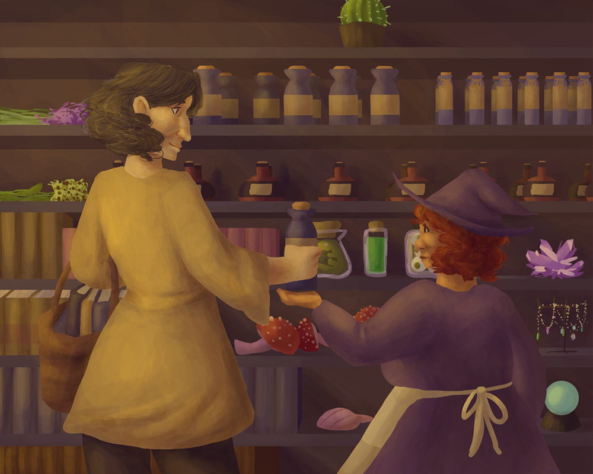

Roshamberg is a rock-paper-scissor inspired card game developed by Alexis Johnson and Zara Storch. Alexis and Zara came up with character concepts together (the barmaid, the plague doctor, the orc who decided to become a businessman, etc), while Alexis brought the characters to life with 24 unique character designs and corresponding card illustrations. Zara developed the game mechanics, as well as the formatting and printing of the cards. Game development was completed in about six months.
You can get the game here https://www.thegamecrafter.com/games/the-town-of-roshamberg